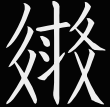

輔助字形とはなにか
前回までで西夏倉頡の26個の基本字形を覚えましたが、西夏文字を構成する部品はもっとたくさんあります。そこで基本字形以外の部品もキーボードに割り当てられています。これを「輔助字形」といいます。
まずは全体をキーボード配列で見てみましょう。

各キーの中央に書いてあるのが基本字形、四隅にあるのが輔助字形ということでしょうが、E, O, V は筆者の判断で出現頻度のより高いと思われる字形を基本字形扱いにして前回までに取り上げました。
H, J, M, N, P, U, X（あと実質 A と C）には輔助字形がありません。これらのキーは基本字形の出現頻度がすでに高いため、他の字形の割り当てがないのです。
輔助字形と基本字形の間には関係がありそうなものもあれば全然別のものもありまちまちです。このキーボード全体を頭に入れる（というか手で覚える）のが理想状態ですが、いきなり全部は無理ですので、アルファベット順に一つ一つのキーに焦点を当てて輔助字形の練習をしていきます。
B の輔助字形
𘦅の上半分を B で取ります。𘦅全体は BK です。
基本字形にあまり似ていない様に見えますが、「月」字の中身が点々になったと考えると覚えやすいでしょう。
| RKBK | 𘃒 | dzjiw² | 「広さ」 | |
| RJBKL | 𘖻 | tśhjwa¹ | 「矢じり」 |
D の輔助字形
D の基本字形は「横から縦に折れる画」でしたが、前に縦画がついた𘠑がその輔助字形です。他のキーとの組合せでは取り方がわかりにくくなるので、組合せを直接覚えていきましょう。
①𘠶の下半分
全体は YD です。
| YDTPI | 𗎴 | tji¹ | 「東方、末尾」 | |
| CXYDA | 𘂺 | tśji¹ | 「瘀阻（血行障害）」 | |
| XVYDK | 𗬪 | lho̱² | 「明るい」 | |
| XIYDA | 𗬞 | bjịj¹ | 「日に晒す」 |
②𘢧𘤧の下半分
全体は FD です。二つ目の左下は V にも見えますがそれも含め下部全てを D で取ります（上掲のキーボードを見ると V の字形が加わった形がもう一つの輔助字形として書いてあります）。さらに横画が加わった𘦚は FJD と取ります。
| FD | 𘂆 | tsjɨ¹ | 「亦た」 | |
| FDP | 𘂇 | piə̣j² | 「髪」 | |
| FFDB | 𗕉 | śjow² | 「カワウソ」 | |
| FDWWP | 𘂣 | ljị¹ | 「按摩する」 | |
| TXFDK | 𘋹 | gjwi² | 「漢人」 | |
| TDLYX | 𘛝 | tsju¹ | 「男根」 | |
| FDQJD | 𘂤 | kha¹ | 格助詞「～の間で、～時に」 |
③𘢃𘢯の上部。この様に D の起筆は縦画より左に出ることもあります。全体はそれぞれ DK, DJK と取ります。
| DKA | 𗢈 | tsa¹ | 「村」 | |
| EDKP | 𗊢 | ljɨ̱¹ | 「重い」 | |
| DKNTM | 𗰑 | tjɨr¹ | 「重い」 | |
| AVDP | 𗦅 | khji̱j¹ | 「難しい」 |
E の輔助字形
①「ヌ」の字形（本家倉頡「水」の輔助字形と同じ）
| HENQ | 𘉱 | śjiw¹ | 「診断する」 | |
| HEAO | 𘊂 | nja̱² | 「大便」 | |
| AVHE | 𗦁 | ɣie² | 「損害」 | |
| MELL | 𗸡 | dzjɨj² | 「性交」 | |
| TRLE | 𗒾 | me² | 「眠る」 | |
| SETJM | 𗶮 | gja̱¹ | 「跳ねる」見にくいですが字首の最後は E です。 |
この輔助字形で重要なのはクチヘンにあたる𘡯MLE です。
| AMLE | 𗢸 | lja̠² | 「口」 | |
| MEMLE | 𗠉 | mər¹ | 「唇」 | |
| LMLE | 𗀱 | phio² | 「歌う」 | |
| MENNN | 𗠃 | tjụ¹ | 「唾」 | |
| MEVSN | 𗠏 | ko̱² | 「喉」「飲みこむ」 | |
| MELYX | 𗠞 | njwi² | 「むさぼり食う」 | |
| MEAMU | 𗠬 | dźjwiw² | 「飢える」 | |
| MEXXP | 𗠹 | dzji̱² | 「教える」 | |
| MEXA | 𗠮 | ˑja̱² | 「歌をうたう娯楽」 | |
| METLX | 𗠯 | tshjar¹ | 「中傷する」 | |
| MECBQ | 𗡍 | piẹ¹ | 「吐く」 | |
| MEMTM | 𗡐 | ka¹ | 「審問する」 | |
| MEP | 𘚥 | lju² | 姓の一つ「呂」 | |
| MEEMB | 𗠵 | pạ² | 「喉がかわく」クチヘンが「涸れる」（サンズイと否定旁）についた字。 | |
| MEEME | 𗠨 | dźjwu² | 「つば」 | |
| MEAZ | 𗡁 | ŋiạ² | 「餅」 |
② 𘣻
サンズイともヌの字形とも全然違うので別に覚える必要があります。
| MCE | 𗀇 | gjow¹ | 「強い」 | |
| YLME | 𗇌 | lu² | 「運気」 | |
| AME | 𗤄 | ˑjɨr¹ | 「問い詰める」 | |
| XXCE | 𘊟 | ŋwo² | 「銀」 | |
| TKCE | 𘁾 | ŋwo² | 「雄弁さ」 | |
| TLSE | 𗓛 | nuə² | 「魔法使い」 | |
| WMBE | 𗄈 | śjwo¹ | 「生ずる」 | |
| SXYE | 𘑨 | ·wu² | 「助ける」 |
④「水」の字形
本家倉頡ではこれが基本字形ですが西夏文字ではほとんど出てきません。
| ANE | 𗫻 | dźji̠j¹ | 「留まる」 | |
| ANTE | 𗧚 | djɨj¹ | 「かくまう」 |
⑤𘣔の左下
全体は JE と取ります。左下の三本の短い横画が E です。実はこの三画は Kawasaki (2016) のフォントではの様に小さなサンズイ形でした。なので水からの連想で E というわけです。
| AJEZ | 𗩀 | kjwɨr¹ | 鳥の一種 | |
| AJEA | 𗪋 | khjɨ̱² | 「行列」 | |
| AJEX | 𗪌 | kjwɨ̱r¹ | 「匈奴、突厥」 |
F の輔助字形
①𘠞𘢩𘡕
| TJF | 𗚅 | ljụ¹ | 「鳴る」 | |
| FV | 𗯔 | lej² | 「心がおだやかでない」 | |
| FA | 𗗥 | źji² | 「商う」漢語「市」の借用 | |
| FZO | 𗗪 | kji̱¹ | 「交易」 | |
| FME | 𗈭 | khwa¹ | 「変化する」 | |
| NTFZ | 𗱢 | nja¹ | 動詞接頭辞の一つ | |
| FRXE | 𗯝 | lhej² | 「訳す」 |
②𘥉𘢿の上部
「フ」の字と縦棒が重なったような字形です。部首全体はそれぞれ FT, FD で取ります。
| FTAA | 𘇐 | śjow¹ | 「あがめる」 | |
| AFTX | 𗩼 | la̱¹ | 「惜しむ」 | |
| FTVBX | 𘇑 | ɣu¹ | 「変える」 | |
| FTAMA | 𘇔 | dzja̱¹ | 「節約する」 | |
| YXFTX | 𘊿 | ba² | 「惜しむ」 | |
| FDA | 𗳒 | ŋwu² | 格助詞「で」（手段） | |
| FNTJ | 𗟚 | ljo̱r¹ | 「炎」 |
③𘨻の下半分
まだやってないのですが上半分は Z で、この部首は ZF で取ります。
| ZF | 𘙬 | tow¹ | 「昆虫」 | |
| ZFCX | 𘙮 | lew² | 「白い」 | |
| ZFTPI | 𘙰 | ləw² | 「同じ」 | |
| LLZFI | 𗆻 | ˑja 声調不明 | 「孤独な」 | |
| ZFYX | 𘙭 | lew² | 「ちまき」 |